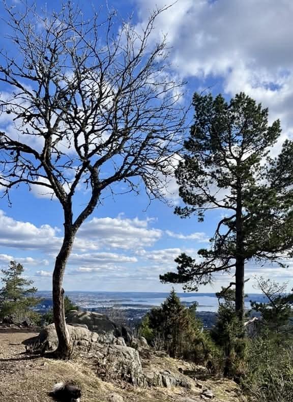
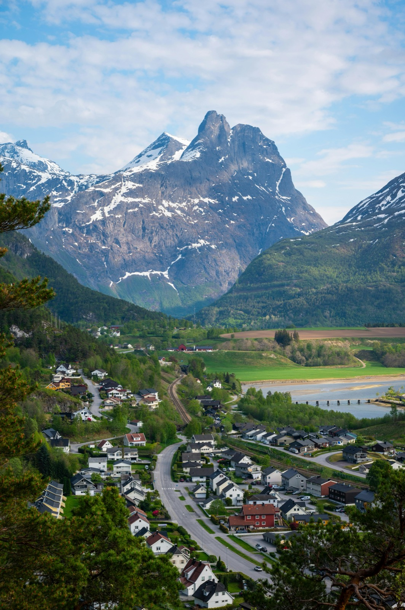

Easy — Fjord Walk
Fossestien — The Waterfall Path
Fourteen waterfalls, seven mountain lakes, and centuries of history along the Gaula River.
Fourteen waterfalls, seven mountain lakes, and centuries of history along the Gaula River.
Fossestien is one of Norway's most rewarding easy trails — a marked path along the Gaula River that threads past fourteen waterfalls and seven mountain lakes. The route follows historic trade paths used for centuries, connecting the valley communities of the Sognefjord region.
The trail is flexible by design: four parking areas allow you to pick the section that suits your group, whether that's a gentle one-hour valley stroll or the full 13 km mountain circuit. The path is clearly marked throughout with red F-signs and includes well-built bridges and boardwalks across the wettest sections.
In late spring the waterfalls run at full power from snowmelt, making for extraordinary sound and spectacle. In summer the mountain lakes are calm and perfect for a rest. This is the ideal introduction to the Sognefjord landscape for first-time visitors or families with younger children.


Yes — Fossestien is our easiest tour and one of the most family-friendly hikes in the Sognefjord region. The trail is well-marked, includes boardwalks over the wettest sections, and can be as short as a one-hour valley walk. Your guide will tailor the pace and distance to your group.
Fossestien is flexible by design — you can walk for as little as 30 minutes or as long as 3 hours, covering anywhere between 5 and 13 km. Four separate parking areas let you choose the section that suits your group on the day.
Fossestien follows a centuries-old trade route along the Gaula River, threading past fourteen waterfalls and seven mountain lakes. In late spring the snowmelt waterfalls are at full power — some of the most dramatic in western Norway. In summer the mountain lakes are calm, clear and perfect for a rest stop.
Late May and June are spectacular — the waterfalls run at full strength from snowmelt and the valley is intensely green. July and August offer the calmest conditions and warmest weather. The trail is open from late May through September.
For the shorter, lower sections sturdy walking shoes are fine. If you plan to do the full 13 km circuit including the mountain lakes, hiking boots with ankle support are recommended. Your guide will advise based on your chosen route.
Private guided tour — all group sizes